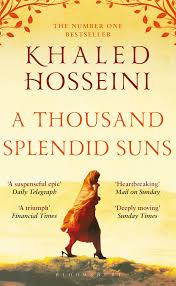

En stark och emotionell roman av Khaled Hosseini som utspelar sig i Afghanistan under flera årtionden av krig och politiska förändringar. Boken följer Mariam och Laila, två kvinnor från olika bakgrunder vars liv kopplas samman genom svåra omständigheter. Den visar kvinnors kamp, vänskap, sorg och hopp i ett samhälle präglat av förtryck och konflikter.
Buy Book